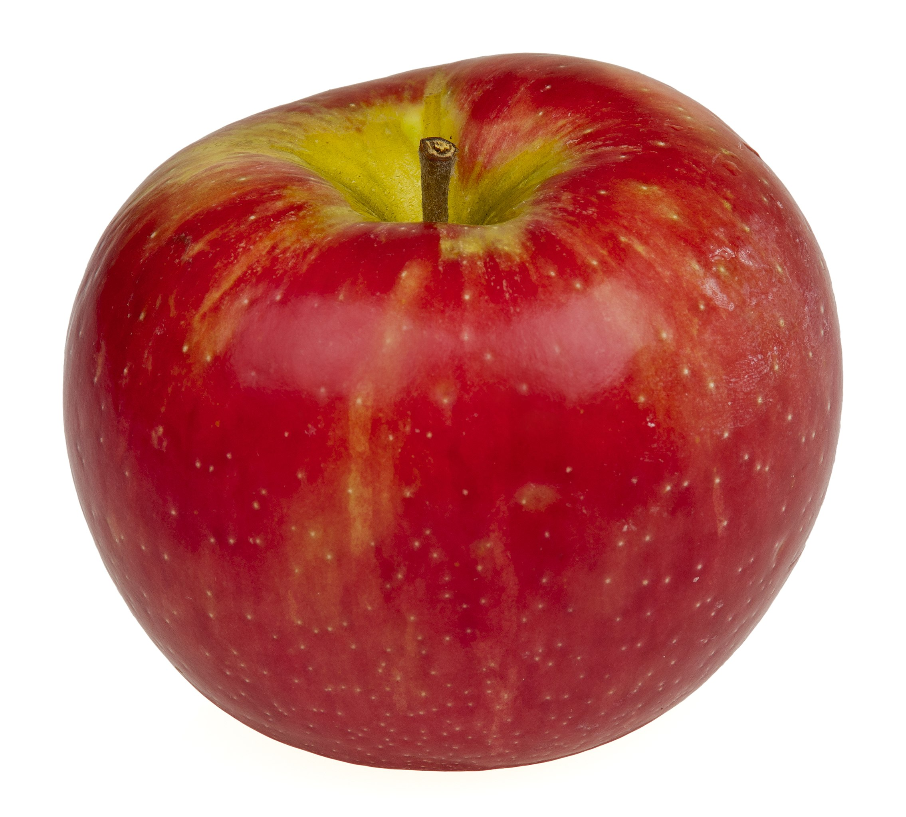
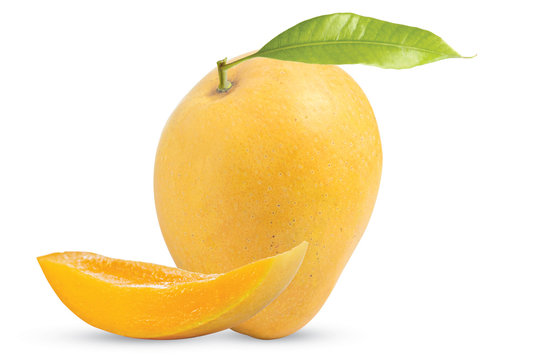

There are over 7,500 varieties of apples grown around the world! Archaeological evidence suggests humans have been enjoying apples for over 6,500 years!


Despite their appearance, bananas are technically berries! Bananas have been a popular food choice for astronauts on space missions!

Mango is known as the "King of Fruits" in many cultures, especially in South Asia. People in India were enjoying mangoes over 5,000 years ago.

The sweet orange we enjoy today is actually a hybrid between a pomelo and a mandarin orange. The word "orange" as a color name actually came after the fruit itself!

The papaya plant looks like a tree with its tall trunk and leafy crown, but it's technically a giant herb. Papaya trees are incredibly fast growers and can start producing fruit within just 10 months of planting!
A pineapple is not a single fruit, but a bunch of individual florets that have fused together. The leafy top of a pineapple is called a "crown" and can actually be planted to grow a new pineapple plant!